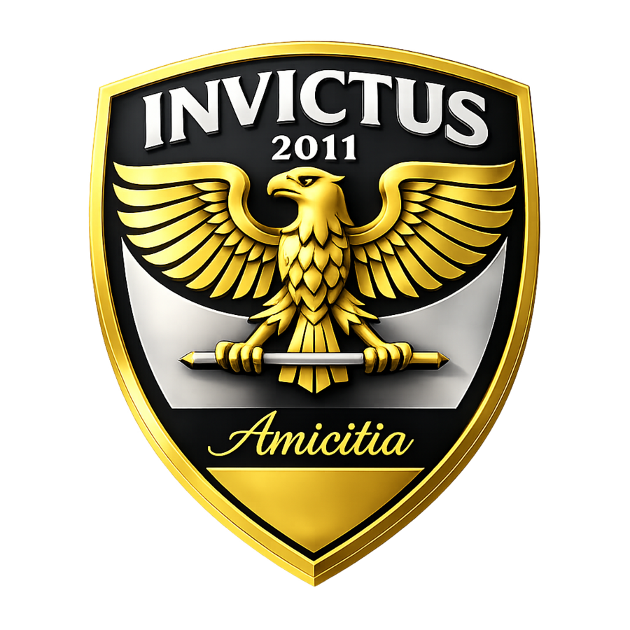
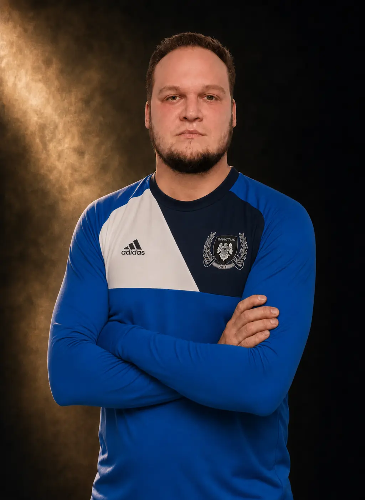
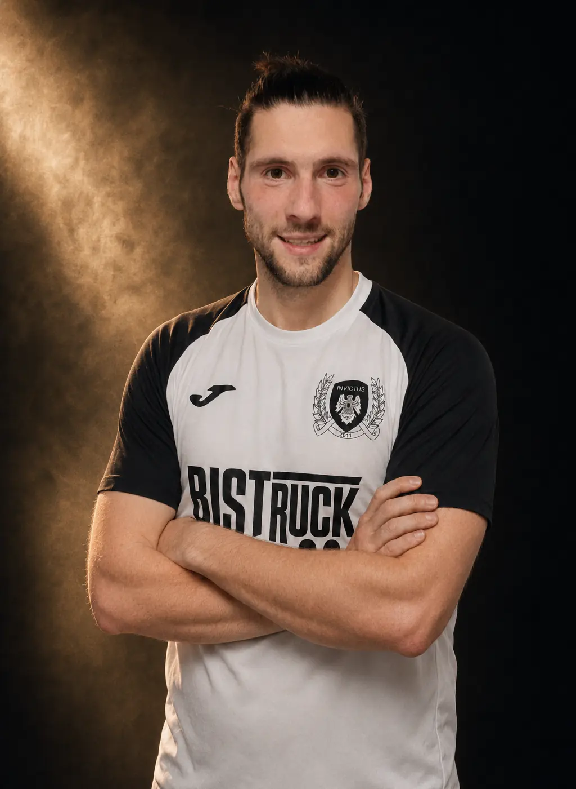
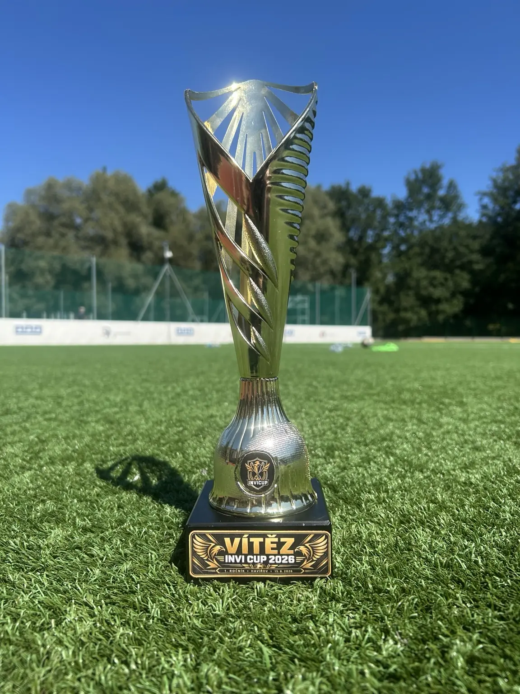
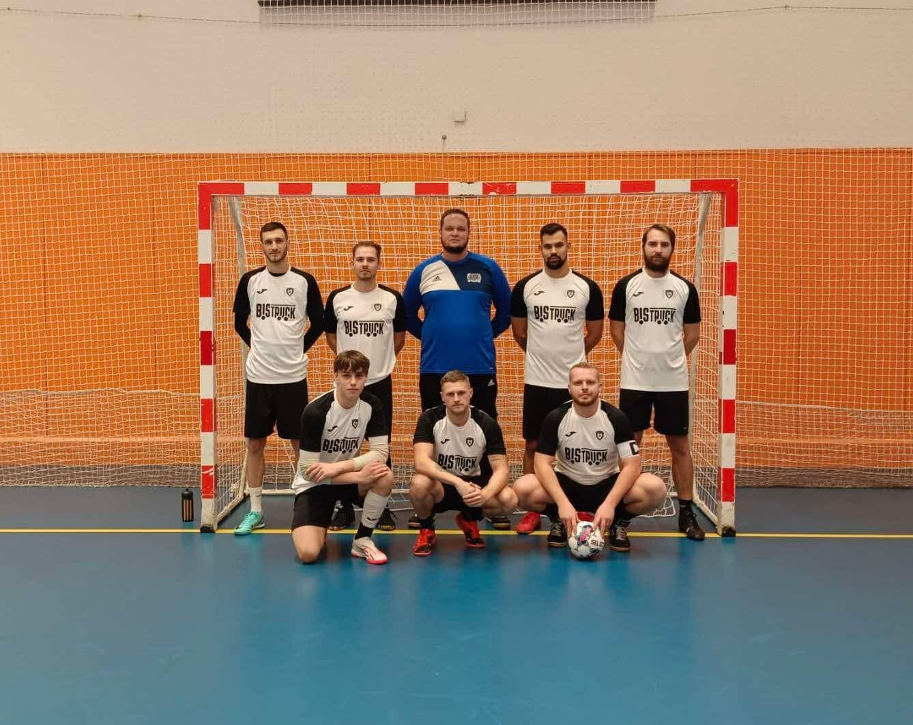

Načítám příští zápas…
Futsalový klub Invictus 2011 · Havířov
Patnáct let.
Jeden tým.
Přátelství, čest a odhodlání nevzdat žádný zápas.
2011rok založení
15let společné cesty
198soutěžních zápasůDalší starší zápasy se v dostupných archivech nepodařilo dohledat.
397vstřelených gólůSoučet z dohledaných zápasů; starší archivní údaje nejsou kompletní.
Zápasové centrum · jubilejní ročník
Sezona 2026/27
Načítám stav sezony
Aktuální údaje se připravují.
Načítám informace k utkání…
Poslední výsledky
Načítám poslední výsledky…
Kdo jsme
Víc než
jen futsal.
Invictus 2011 je amatérský futsalový klub s historií napříč regionem. Působil v Havířovské, Karvinské i Ostravské futsalové lize a pravidelně se účastnil turnajů Futsalmania Orlová.
Od roku 2011 prošly klubem desítky hráčů, nespočet zápasů i chvíle, které se nevejdou do výsledkových tabulek. Základem zůstává parta lidí, pro které má klub své pevné místo.
Přátelství
Tým stojí na lidech, kteří se na sebe mohou spolehnout.
Čest
Hrajeme naplno, s respektem k soupeři i vlastnímu znaku.
Odhodlání
Výsledek není nikdy rozhodnutý, dokud nezazní poslední hvizd.
Klubové rekordy
Jména, která
zůstávají.
Výběr doložených individuálních rekordů a historických milníků Invictus 2011.
zápasů za Invictus
Jakub Malý
Nejvíce dohledaných startů za Invictus v dostupných ligových záznamech.
dohledaných gólů
Jakub Čespiva
Nejlepší doložený střelec klubu v dostupných ligových záznamech.
místo v KFL
Sezona 2016/17
Nejlepší doložené umístění klubu: bronz při premiéře v Karvinské futsalové lize.
soutěžní zápas
Petr Zálešák
Autor vůbec prvního gólu Invictu po dlouhém čekání v premiérové sezoně.
Hráčské statistiky spojují dohledané individuální záznamy z Havířovské, Karvinské a Ostravské futsalové ligy. Aktualizováno 4. 8. 2026.
„Invictus“ znamená neporažený.
Ne skóre na tabuli, ale duch, který se nevzdává.
Čtyři nadšenci a jeden nápad
Marek Adamec, Jakub Čespiva, Filip Hrbek a Petr Zálešák se rozhodli založit vlastní futsalový klub. Cesta nebyla jednoduchá, ale po velkém úsilí se jejich nápad stal skutečností.
První sezona v HFL
Startovné 15 000 Kč bylo pro mladé studenty téměř nepřekonatelnou překážkou. Díky tehdejšímu předsedovi Havířovské futsalové ligy, panu Svorníkovi, jej mohli zaplatit nadvakrát a nastoupit do první sezony.
Historicky první gól
Začátky byly tvrdé. Na první gól čekal tým dlouhých jedenáct zápasů. Vstřelil jej Petr Zálešák a navždy se tak zapsal jako první střelec v historii Invictu.
První skutečné vítězství
První výhra na hřišti přišla až ve druhé sezoně. V premiérovém ročníku tým zaznamenal pouze kontumační vítězství kvůli nedovoleným startům soupeře z Horní Suché.
Kapitán Jakub Čespiva
Na týmové poradě v den založení byl kapitánem zvolen Jakub Čespiva – hlavní zakladatel a „otec Invictu“. Kapitánskou roli zastává dodnes.
Jméno z hospody U Koníčka
Název vznikl v tehdejší klubovně, hospodě na Nábřeží U Sváti, které nikdo z týmu neřekl jinak než U Koníčka. Latinské slovo invictus znamená „neporažený“ – odvážný cíl, ke kterému klub od začátku směřuje.
Logo tvořené vlastními silami
První podobu klubového loga vytvořil zakladatel Filip Hrbek. Do současné a dalších podob jej rozvinul Petr Zálešák, který se stará o grafickou tvář Invictu.
Historie dresů
Od zapůjčených erárních dresů Saxon přes KIK a Nike Victory až po současnou sadu Joma s partnerem Bistruck.
Samostatná podsekceProhlédnout vývoj dresů a fotografie →Premiérový ročník v Karvinské futsalové lize Invictu přinesl bronz
V průběhu let následovaly další 4 sezony v této lize.
Havířov, Karviná, Ostrava i Orlová
Invictus během své historie nepůsobil pouze v Havířovské futsalové lize. Nastupoval také v Karvinské a Ostravské futsalové lize a aktivně se účastnil turnajů Futsalmania Orlová.
Patnáct let jedné party
Soupiska se během let výrazně proměnila, ale zdravé jádro přátel zůstalo. Právě ono je největším vítězstvím klubu – a plánuje zůstat až do posledního výdechu Invictu.
15 let Invictus 2011
Výroční logo pro jubilejní sezonu
Pro sezonu 2026/2027 klub představil speciální výroční znak k patnácti letům od svého založení. Zlaté logo bude Invictus používat pouze během této jubilejní sezony; poté se vrátí ke své klasické klubové identitě.

Historické statistiky
Dohledaná
klubová čísla.
Pořadí spojuje ověřené individuální záznamy z Havířovské, Karvinské a Ostravské futsalové ligy. Započítáváme pouze čísla přiřazená ke konkrétním hráčům, nikoli týmové branky z kontumací.

Nejvíce zápasů
Jakub Mojzeš
67dohledaných zápasů za Invictus
| Pořadí | Hráč | Zápasy |
|---|---|---|
| 1. | Jakub Mojzeš | 67 |
| 2. | Jakub Malý | 63 |
| 3. | Petr Zálešák | 61 |
| 4. | Jakub Čespiva | 59 |
| 5. | David Vallo | 54 |
| 6. | Tomáš Malý | 41 |
| 7. | Filip Hrbek | 27 |
| 8. | Martin Myšák | 16 |
| 9. | Tomáš Poncza | 16 |
| 10. | Jakub Horňák | 15 |

Nejvíce gólů
Jakub Čespiva
32dohledaných gólů za Invictus
| Pořadí | Hráč | Góly |
|---|---|---|
| 1. | Jakub Čespiva | 32 |
| 2. | Petr Zálešák | 22 |
| 3. | David Vallo | 21 |
| 4. | Tomáš Malý | 15 |
| 5. | Ján Štromp | 9 |
| 6. | Jakub Malý | 7 |
| 7. | Daniel Klimša | 5 |
| 8. | Tomáš Poncza | 4 |
| 9. | Martin Myšák | 3 |
| 10. | Jakub Mojzeš | 1 |
Zdroje a rozsah evidence se načítají ze společného přehledu historických statistik.
Náš tým
Soupiska
Hráči Invictus 2011, kteří se aktivně účastnili zápasů napříč soutěžemi v sezoně 2025/2026.
Klubový archiv
Fotogalerie
Od prvních dochovaných snímků až po současnost. Další společné momenty budeme postupně doplňovat.
Patnáctá sezona Invictu
Představení nových klubových dresů
Kapitánská páska se znakem Invictu
Invictus v magazínu Futsal Havířov
Klubová páska v tradičním prostředí
Týmová fotografie ze sezony 2024/25
Tým s vlajkami Invictus 2011
Detail klubového dresu s partnerem Bistruck
Vzpomínka na klubové soustředění
Aktuálně z klubu
Novinky
Zápasy, klubové události, rozhovory i příběhy ze života Invictu na jednom místě.

Joga Bonito vítězem INVICUPU 2026
První ročník vyhrál tým Joga Bonito se sedmi body. Invictus skončil druhý. Prohlédněte si všech šest výsledků a konečnou tabulku.
Číst článek
Nové dresy pro sezonu 2026/27
Invictus vstoupí do jubilejní sezony v novém. Firmám zároveň nabízíme možnost podpořit klub a dostat své logo přímo na naše zápasové dresy.
Číst článek
Nový web Invictu je online
Patnáct let klubové historie, současná soupiska, výsledky, statistiky, fotografie i příběhy hráčů jsou nyní přehledně na jednom místě.
Číst článekPřímo z klubového profilu
Invictus
na Instagramu.
@futsalinvictus2011
Zápasy · tým · zákulisí
Otevřít profil ↗
Profil je vložen oficiální funkcí Instagramu. Nové příspěvky se v něm zobrazují bez zásahu do webu; pokud Instagram vložený obsah zablokuje, použijte tlačítko „Otevřít profil“.
Partnerství 2026/27
Hledáme nového partnera.
Pro novou sezonu.
Invictus 2011 vstupuje do jubilejního ročníku a otevírá prostor firmě, podnikateli nebo značce, která chce být vidět společně s regionálním futsalovým klubem a stát se součástí jeho další kapitoly.
Spolupráci nastavíme individuálně podle možností partnera. Může mít podobu finanční podpory, materiální pomoci, služeb nebo podpory konkrétní klubové akce.
15let klubové historie
2regionální soutěže v poslední sezoně
365dní prostoru pro společný příběh
WEB + IGvlastní digitální prezentace
Co můžeme nabídnout
Partnerství, které
bude vidět.
Konkrétní rozsah prezentace vždy domluvíme podle typu a hodnoty podpory. Nehledáme pouze logo na látce, ale spolupráci, která dává smysl oběma stranám.
Logo na dresech
Možnost umístění loga na přední nebo zadní části nové zápasové sady či na rukávu.
Web a Instagram
Představení partnera na klubovém webu, Instagramu a v dalších vybraných digitálních výstupech.
Zápasy a fotografie
Viditelnost na týmových fotografiích, zápasových materiálech a při klubové prezentaci v regionu.
Turnaje a akce
Možnost spojit značku s turnajem INVI CUP nebo dalšími klubovými událostmi.
Podoba spolupráce
Najdeme model,
který vám sedne.
- Finanční partnerstvíPodpora dresů, startovného, pronájmů a běžného fungování klubu.
- Materiální nebo službová podporaVybavení, doprava, tisk, občerstvení nebo jiná praktická pomoc.
- Partner konkrétní akceSpojení značky s turnajem, zápasem nebo klubovou událostí.
- Individuální spolupráceRádi vyslechneme i vlastní návrh a vytvoříme řešení na míru.
Ozvěte se nám
Pojďme společně
otevřít novou sezonu.
Stačí krátký e-mail. Představíme možnosti spolupráce a bez závazků probereme, jak může partnerství s Invictus 2011 vypadat.